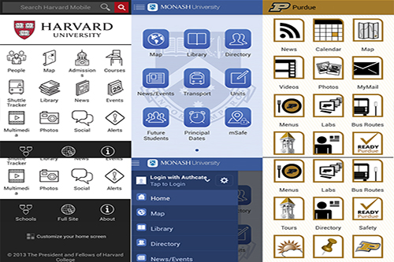

UC Campus Application

Due to a severe earthquake in Christchurch in 2011, the University of Canterbury (UC) is going through heavy post-earthquake remediation. UC administration was a bit stressed in managing regular classes and the construction work as they have to keep the health and safety of students as a priority.
After few early meeting, UC asked HITLab to design a smartphone application that provide information of the current/future work along with the general information of their course curriculum and university.
Our main objective was to investigate and design the app to improve the experience of the staff, students, guests and the construction workers on the campus.
This was a part of a group project in which my group was responsible to conduct research, design and prototype an application that can give an insight to the developers about the user interface and user interaction with the application.
User-Centered Design Process:
We started with the initial requirement analysis, then personas and storyboarding was done in order to understand the user and design user-centered interfaces.
We also performed a comparison analysis of the existing smartphone applications of well-recognized Universities from all over the world.


We made a workflow diagram of the application and then paper prototyped the app.

Lo-fidelity prototyping involving paper prototyping, wire-framing, mockups followed by hi-fidelity prototyping was done in which we created an interactive app using proto.io.
After this, we performed usability testing with the students and staff by using Think Aloud Usability Test and iterated to the final interfaces.


Group Members: Kunal Gupta Jonathan Wong Charles Smart Richie Jose Portfolio